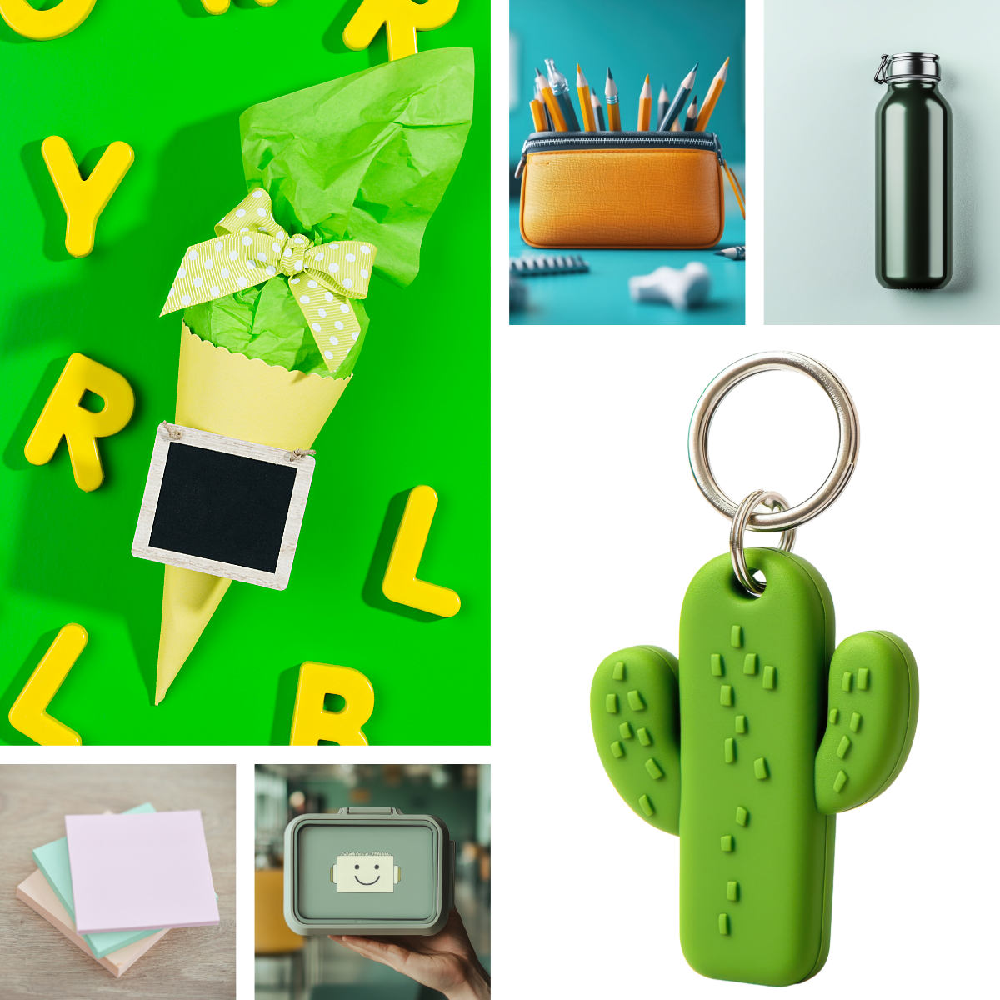

Stitch

Produktbeschreibung
Unsere "Stitch" ist die ideale Schultüte für kreative und fröhliche Schulanfänger.
Mit ihrem verspielten, modernen Design in frischen Grüntönen und liebevollen Motiven sorgt sie für Begeisterung am ersten Schultag.
Hergestellt aus stabilem Karton und verziert mit originellen Details, wird diese Schultüte schnell zum Lieblingsstück.
Auch nach der Einschulung wird sich ihr Kind noch lange an dieser wahren Wundertüte erfreuen.
68cm lange, fertig dekorierte Schultüte mit Eulen-Motiv
strukturierte Colorwellpappe mit 260 g/m²
Die "Extras" in unserer Stitch Wundertüte:
Hochwertiger Kaktus-Schlüsselanhänger aus Edelstahl: ca. 7 cm (inkl. Ring)
Robustes Federmäppchen, orange: enthält zertifizierte Bunt- und Bleistifte, sowie Schere und Lineal
Post-It Block in Pastell-Farben, hergestellt aus 70g/m2 starkem Papier aus nachhaltig bewirtschafteten Anbau, 76 x 76mm
Olivgrüne Trinkfalsche aus Edelstahl
Brotdose/ Lunchbox „Robot“: BPA-frei, Größe: 16 x 7 x 11 cm, Mit 2-geteiltem Bento-Einsatz und Snackgabel
Lieferung
Die Versandkosten (inklusive gesetzliche Mehrwertsteuer*)
innerhalb Österreichs betragen € 5,99/Paket (bis 5kg).
Ins EU-Ausland liefern wir für ab € 13,99/Paket.
Soweit im jeweiligen Angebot keine andere Frist angegeben ist, versenden wir die Ware innerhalb von 3 - 5 Werktagen nach Fertigstellung eures Produktes. Die Dauer der Fertigung ist im Shop in der Artikelbeschreibung angegeben.
Sonn- und Feiertags findet keine Zustellung durch den Dienstleister DHL statt.
Habt ihr Artikel mit unterschiedlichen Lieferzeiten bestellt, versenden wir die Ware in einer gemeinsamen Sendung. Die Lieferzeit berechnet sich in diesem Fall nach dem Artikel mit der längsten Lieferzeit welchen ihr bestellt habt.
Lieferzeit
Soweit im jeweiligen Angebot keine andere Frist angegeben ist, versenden wir die Ware innerhalb von 3 - 5 Werktagen nach Fertigstellung eures Produktes. Die Dauer der Fertigung ist im Shop in der Artikelbeschreibung angegeben.
Sonn- und Feiertags findet keine Zustellung durch den Dienstleister DHL statt.
Habt ihr Artikel mit unterschiedlichen Lieferzeiten bestellt, versenden wir die Ware in einer gemeinsamen Sendung. Die Lieferzeit berechnet sich in diesem Fall nach dem Artikel mit der längsten Lieferzeit welchen ihr bestellt habt.
Bestellen
Zurück
Startseite